| 日付 | 2021年2月15日（月） - 2021年2月20日（土） | ||||||
|---|---|---|---|---|---|---|---|
| 山域 | 近畿の山 | ||||||
| メンバー | 単独 | ||||||
| 山行形態 | 5泊6日車中、避難小屋泊 | ||||||
| アクセス | 車 | ||||||
| ルート (Map2) |
|
4日目
夜中はシュラフ1枚では少し寒かった。2枚にしておくべきだった。
分かっていたことだが天気が悪い。
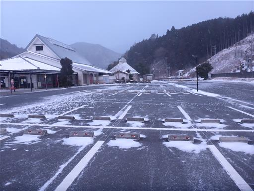
方角によっては少しだけ青空が望める。
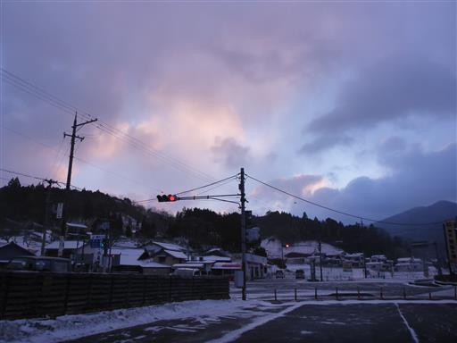
気持ちは乗らないが、三峰山登山口に移動する。標高560m。
道路は積雪、当然誰もいないだろうと思っていたら、先行車が1台、さらにもう1台やって来る。
平日の雪の日なのに、世の中には物好きがいるものだ。
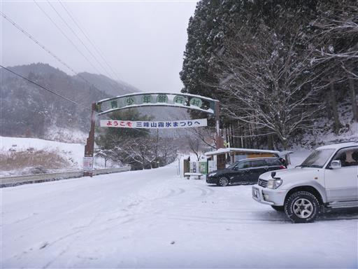
三峰山登山口の立派な標識。この山は霧氷で有名な山で、
高見山地では高見山に次いで標高の高い山だ。
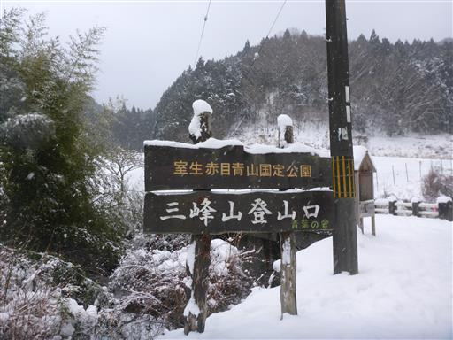
登り始めから雪が降っていて、地面には雪が積もっている。
最初からカッパを着て歩き始める。昨日の反省を活かして、手にはスキー手袋だ。
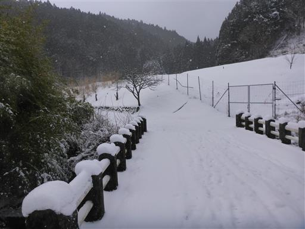
分岐点。どちらからでも登れるが、往路は登り尾コース、
復路は不動滝コースを歩くことにする。
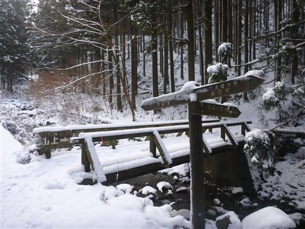
登山開始地点から雪は結構積もっている。
しかし傾斜は緩く道も分かりやすいため、昨日のような緊張感は無い。
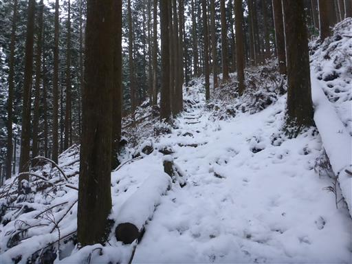
しばらく登るとススキが広がる場所に出てくる。
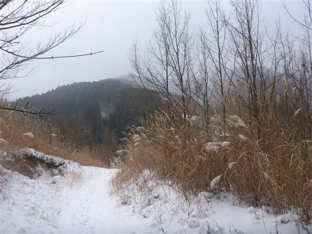
ここに立派な小屋がある。
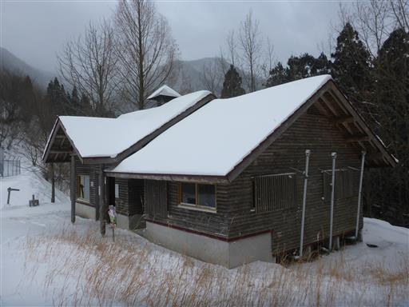
真ん中の囲炉裏？の部分だけなぜか雪がある。
誰かが火を消すために雪を乗せたのだろうか？
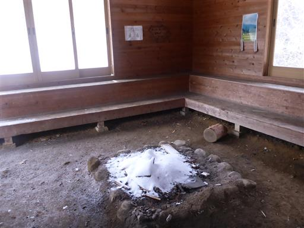
小屋の直後は分岐点。真ん中の尾根を進む。
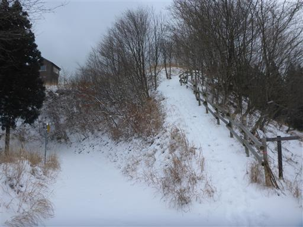
天気は悪いが少しだけ近くの山々が見える。
山頂からこの程度でも展望があればよいのだが。
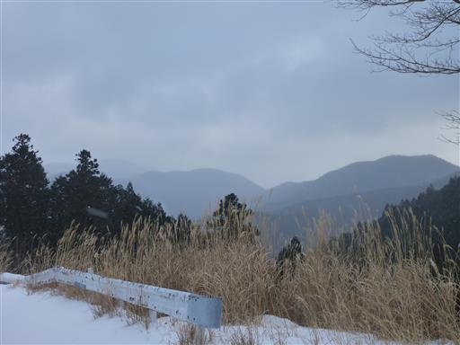
高台にもう一つ小屋がある。
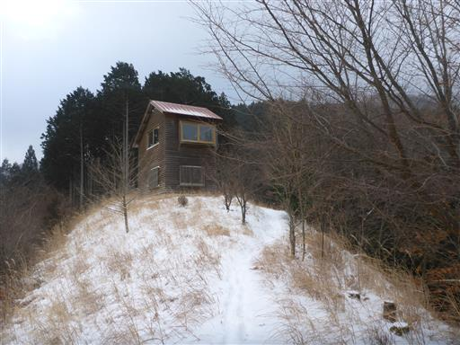
中を覗いてみる。入口に展望台と書かれていたが、
展望のためだけにこんなに立派な小屋を作ったのだろうか？
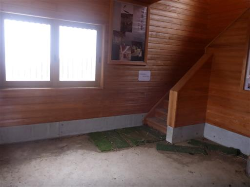
標高を上げるとようやく半分だけ植林地帯でなくなる。
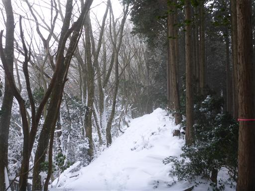
雪に覆われた栗。寒そうだ。
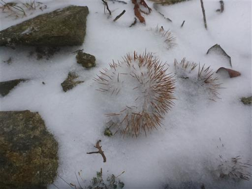
だんだんと雪が深くなってくる。
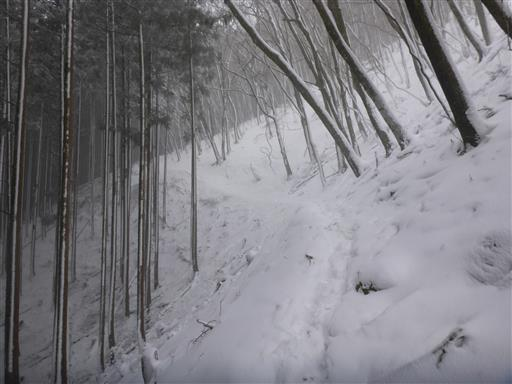
目の前に見える稜線は風が強そうで、雪が舞っている。
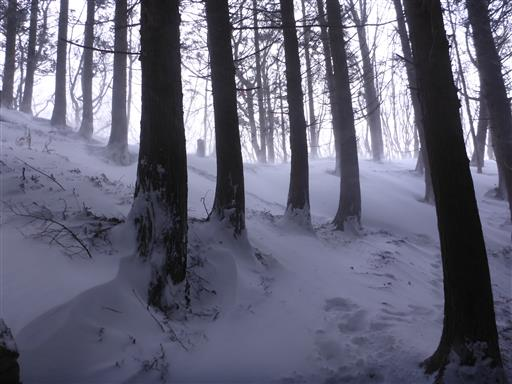
稜線に到達。ものすごく風が強くて寒い。
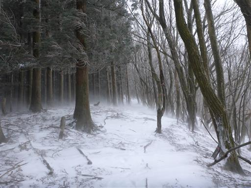
強風で吹き飛ばされて、この辺りはほとんど雪が無い。
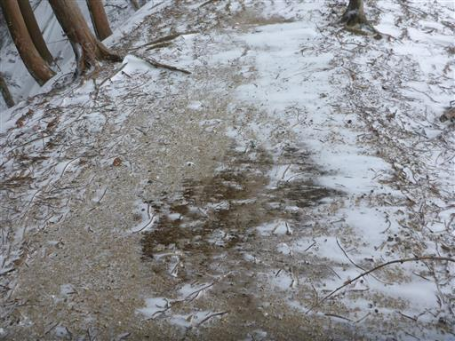
石像が祀られている。ほっと一息。
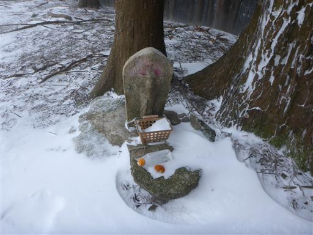
避難小屋に到着。ここは不動滝コースとの合流地点だ。
小屋の中で先行者2名が休んでいる。
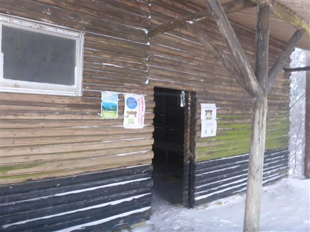
ここから先は足跡がなくなる。先ほどの2名が先頭だったようで、
ここからは自分がラッセルをする番だ。
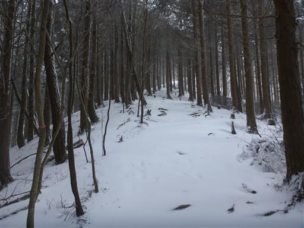
あと700mの標識。
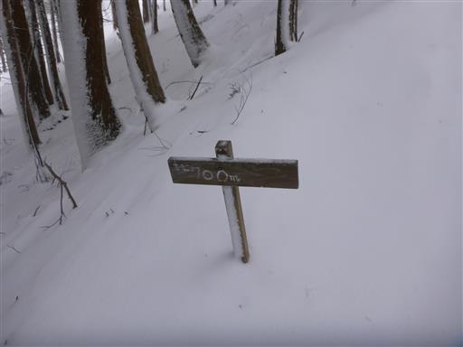
雪が深くなってくる。のたのた登っていると、だれか後ろから追い越すかと思ったが誰も来ない。

100mごとに標識があり、ありがたい。
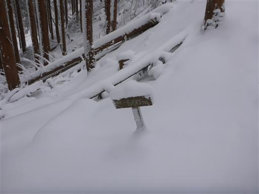
木の上にもっさりと雪が乗っかっている。
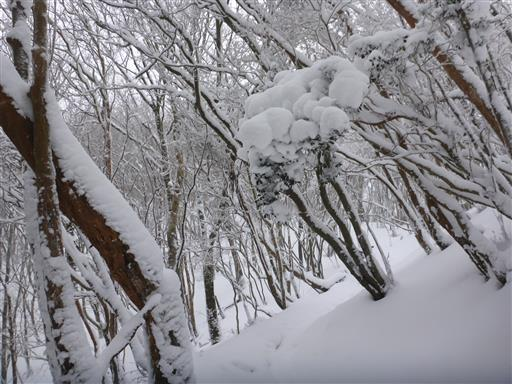
三峰山名物の霧氷が見えてきた。枝が白く染まっていて美しい。
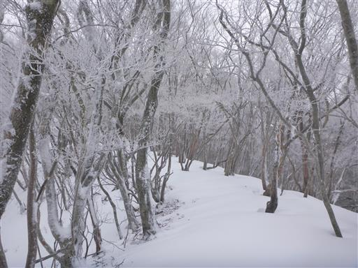
木の幹も凍り付いている。
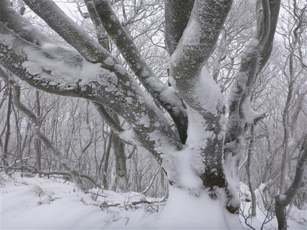
雪は深いところで膝上くらいまで。
踏み跡は全くないが、サラサラの雪であまり重くないので、大きな負担にはならない。
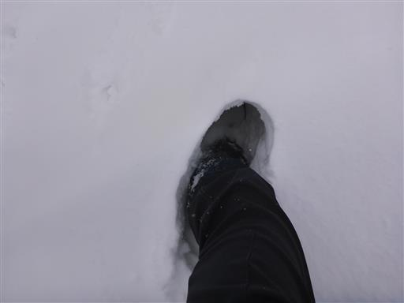
一面、霧氷が広がる背景が青空だと本当に美しいのだが…
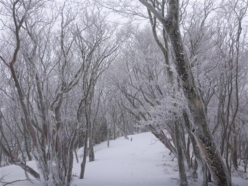
三峰山に到着。標高1235m。
本日の一番乗りだ。
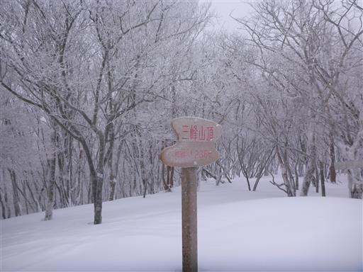
木が切られて展望が広がるようになっているが、何も見えない。
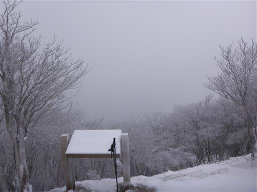
周囲は霧氷のみが広がる真白な世界。
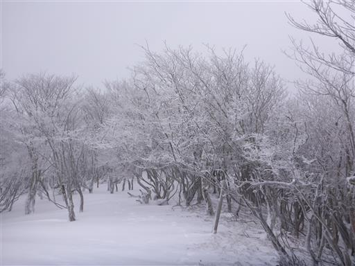
写真を撮ったら引き返す。
100m間隔の標識には「また登りに来てください」と書かれていて、心が暖まる。
地元の小学生が作ったもののようだ。
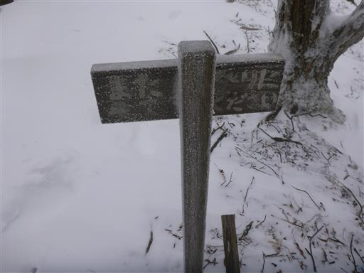
降り続く雪は、ここでも結晶を作っている。
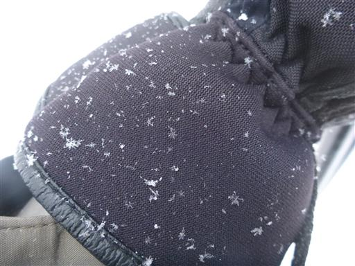
小さな雪庇。
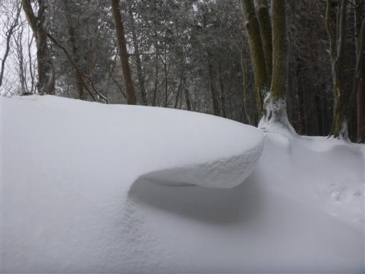
避難小屋まで戻ってくる。ここまで誰ともすれ違わなかったと思ったら、2名はまだ小屋で休憩している。
何とも長い休憩だ。ここから不動滝コースを下る。
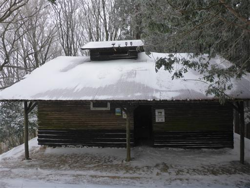
幸い足跡が付いている。
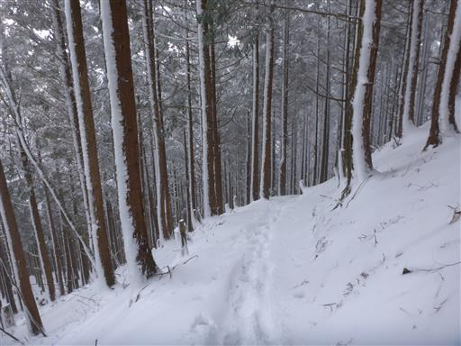
その後、登ってくる人とすれ違いだす。
しばらく下っていると、続々と登山者が登ってくる。平日の雪の日にここまで人とすれ違うとは驚きだ。
思いの外人気の山だったようで、今回の山の選択は間違いではなかったようだ。
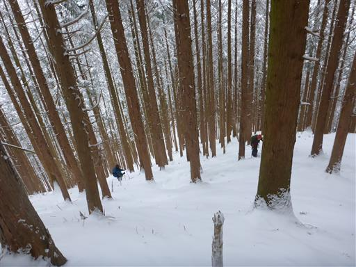
不動滝に到着。滝の側は水しぶきで凍りついている。
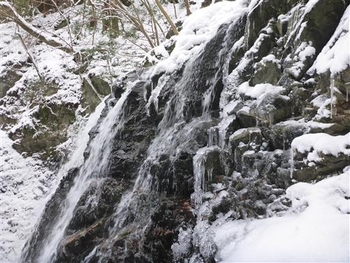
下から見上げる不動滝。そこそこ立派な滝だ。
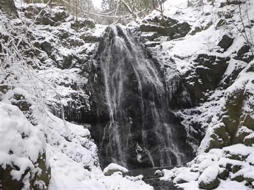
側に不動堂がある。あまり趣の無い建物だ。
中には神様が祀られている。

ここまで下山すると、雪道は完全に踏み固められている。
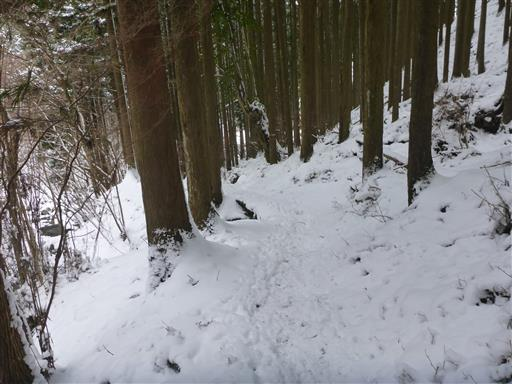
少し青空が見えてくる。ここから晴れるのだろうか？
晴れるのであれば近くの高見山にも登ろうと考えたが、
この雪雲はそう簡単には取れないだろうと判断。
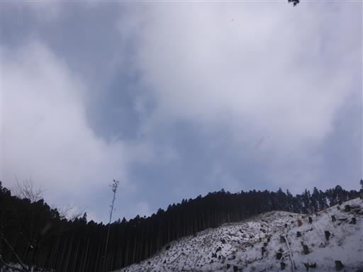
駐車場まで戻ってくる。誰も来ないだろう思っていた駐車場はほぼ満車。
ものすごい人出だ。
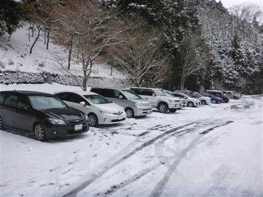
ワイパーに入浴券が挟まれている。常々登山者の多い山なのだろう。
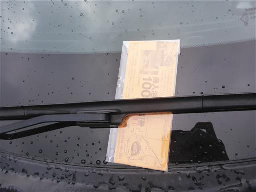
三峰山を後にする。
昼前で昼食を取り損ねたため、車で食べながら次の目的地に移動。
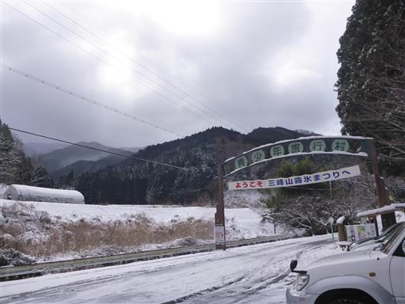
iPhoneの充電ケーブルが壊れたため、ヤマダ電機松坂店で購入。
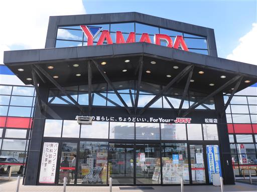
513BAKERYで明日の朝食のパンを購入。
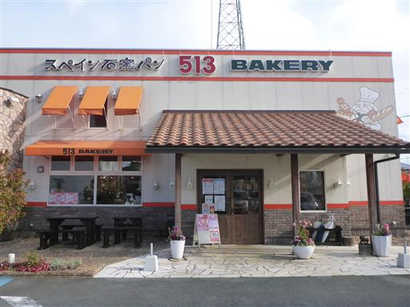
明日は高鷲スノーパークでスキーの練習をする予定。
高速をひた走り、郡上市に到着。飛騨牛を食べられる覇楼館で夕食。
この旅唯一の贅沢だ。

屋根から雪が落ちてきている。周囲は雪だらけ。
とんでもなく雪の多い町だ。
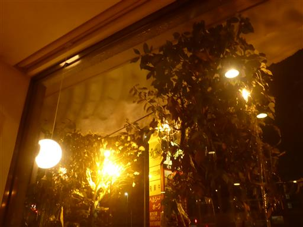
夕飯後は高鷲スノーパークの駐車場で車中泊をする。
夜に吹雪の中を運転するのはかなり怖かった。
全く前が見えず、ハイビームにすると雪が光を反射して余計何も見えない。
頑張って40km/hで走っていたが、それでも次々と追い抜かれた。
みんな一体どこを見て走っているのだろう？
駐車場に停まっている車はチラホラ。車は次第に雪に埋もれていき、外の様子も伺えなくなっていった。
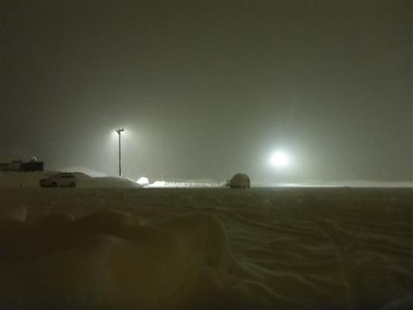